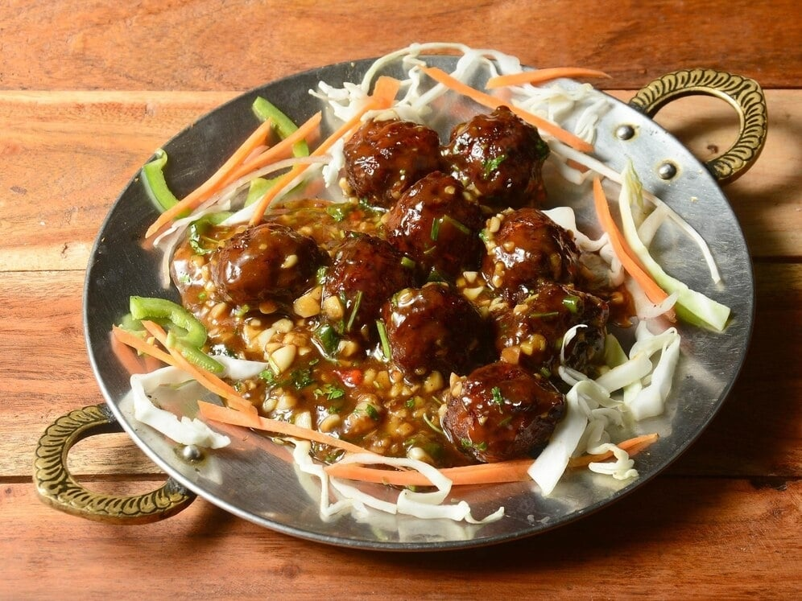

|

|
How to Make Dry Vegetable Manchurian:-
1. Take the finely chopped or grated veggies in a bowl.
Here I added ½ cup finely chopped red cabbage, ½ cup grated
carrot, ¼ cup finely chopped capsicum (green bell pepper),
¼ cup finely chopped french beans, ¼ cup finely chopped
spring onions (scallions).
2. Add the dry ingredients – 2 tablespoons corn starch,
2 tablespoons all purpose flour, ½ teaspoon black pepper
and ½ teaspoon salt or add as required.
3. Gather the whole mixture and kind of mix and knead
so that the veggies leave the water and you get a dough
like mixture.
4. Take a small portion of the mixture in your hands.
5. Press and roll it in your palm.
6. And make a round veggie ball.
7. Make all veggie balls this way and keep aside.
8. Heat oil for deep frying in a kadai or pan. Add a
small piece of ball to the hot oil. If the balls does
not stick or settle down at the bottom of the pan,
but comes up steadily the oil is ready for frying
these veg manchurian balls.
9. Gently place the balls in the hot oil. The oil
has to be medium hot. Too much heat and the
manchurian balls will be browned from top and
uncooked from inside. Less hot oil will make the
balls absorb too much of oil.
10. When cooked from one side, turn the balls with a slotted spoon.
|